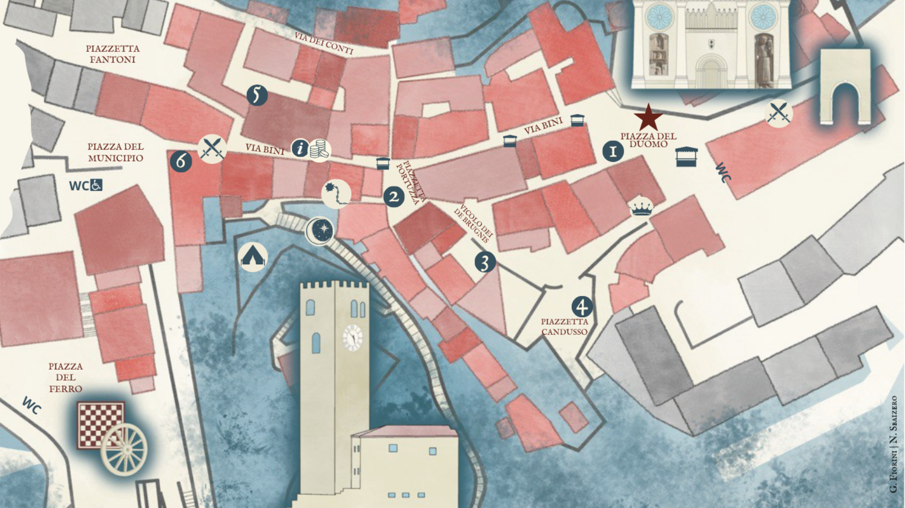

Benvenuto a Tempus 2026
Quale zona della festa vuoi explorare?
🏰 Zona Castello / Via Bini
⛪ Zona Duomo / Campanile
🏰 Castello
⛪ Duomo
I Luoghi della Festa
Locande e Ristori
1️⃣ Antro et Locanda de lo Duomo
2️⃣ Cort dal Diaul
3️⃣ Cervogeria de lo Eretico
4️⃣ Taberna de lo Rospo
5️⃣ Porta Paninorum
6️⃣ Taberna Pane et Salamen
Eventi e Spettacoli
⭐ Incendio del Campanile
🏁 Palio del Niederlech
♟️ Dama Vivente
⛓️ Antro delle Torture
⛺ Accampamento
🌙 Salita delle Cartomanti
🧺 Mercati
🧺 Mercati
🧺 Mercati
🧺 Mercati
Servizi e Utilità
💰 Cambio Monete
ℹ️ Infopoint / WC / Nursery
⚔️ Salvacondotto
⚔️ Salvacondotto
👑 Cortile dei Nobili

×
📜 Mostra lo Menù